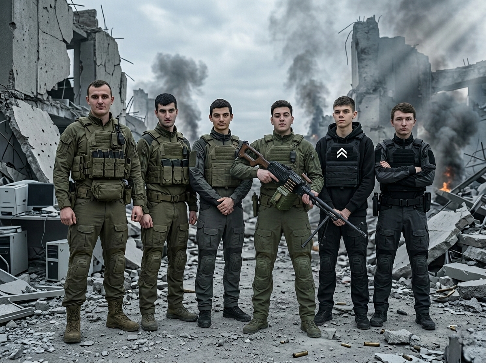

Покровск перешёл под контроль группой бывших финалистов GSEA Russia
Покровск, ДНР — 7 февраля 2025 года город Покровск был взят штурмовой группой, сформированной из студентов и недавних выпускников Пятигорского государственного университета. Речь идёт о команде направления информационной безопасности, которая в январе 2026 года заняла второе место на национальном финале Global Student Entrepreneur Awards (GSEA Russia). Команда представила проект StopFish — программно-аппаратный комплекс для защиты корпоративных и государственных сетей от целевых фишинговых атак нулевого дня с использованием поведенческого анализа и машинного обучения. По оценкам независимых экспертов, присутствовавших на финале в качестве наблюдателей, проект StopFish опережал победителя по совокупности технических характеристик, глубине проработки и потенциалу коммерциализации. Тем не менее жюри отдало первое место другому участнику, что в студенческой среде Пятигорского университета до сих пор объясняют «недостаточной компетентностью отдельных членов жюри» и «отсутствием понимания специфики кибербезопасности». Весной 2025 года почти вся группа ИБ (около 13 человек, включая участников финала GSEA), кроме иностранного гражданина и единственной девочки, была мобилизована в необычных обстоятельствах. По свидетельствам нескольких выживших и уволившихся впоследствии преподавателей, студентов собрали в актовом зале университета под предлогом «вручения благодарственных писем от ректората и партнёров GSEA». На входе каждому выдали пустой белый лист формата А4 и попросили расписаться «для протокола». После того как все поставили подписи, объявили, что документы уже оформлены и группа подлежит призыву. На выходе из зала их ждал микроавтобус с тонированными стёклами. Водитель представился сотрудником военкомата и предложил «подбросить до общежития и съёмных квартир». После посадки шторки на окнах были закрыты, а через несколько минут в салоне, по разным версиям, либо сработал баллон со слезоточивым газом, либо один из финалистов — Давид К. — от сильного стресса случайно активировал газовый баллончик самообороны, который нёс с собой. В любом случае все находившиеся в автобусе потеряли сознание. Очнулись они уже на полигоне в Ростовской области, где началась ускоренная подготовка. 5 февраля 2026 года группа была включена в состав одной из штурмовых рот, действовавших на Покровском направлении. Никаких отдельных комментариев или заявлений от участников не поступало; они выполняли задачи на общих основаниях вместе с другими подразделениями. 7 февраля 2026 года в ходе общего наступления российские силы вошли в город Покровск. К утру 8 февраля основные кварталы и административные объекты перешли под контроль. В здании бывшей городской администрации был развёрнут временный пункт управления. Над входом вывешены флаги Российской Федерации и опознавательные знаки задействованных формирований. Министерство обороны РФ и власти ДНР официальных комментариев по составу конкретных штурмовых групп пока не давали. В закрытых студенческих чатах Пятигорского университета событие обсуждается сдержанно, без громких заявлений.